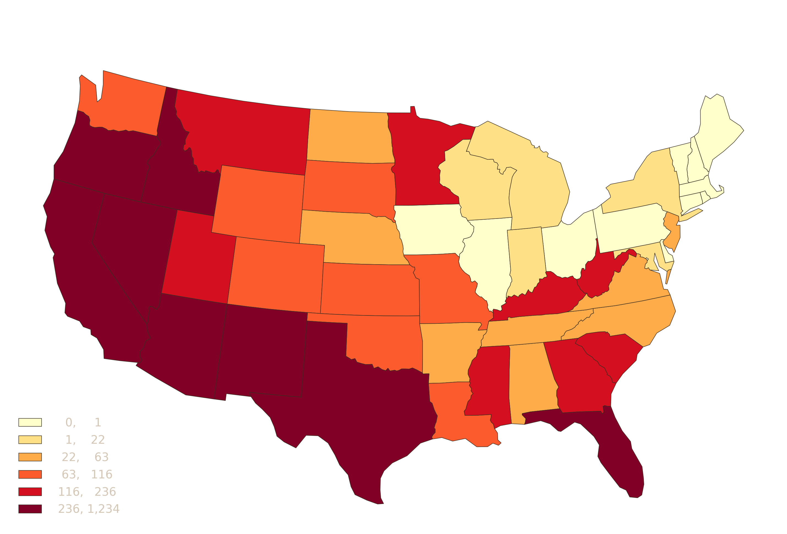
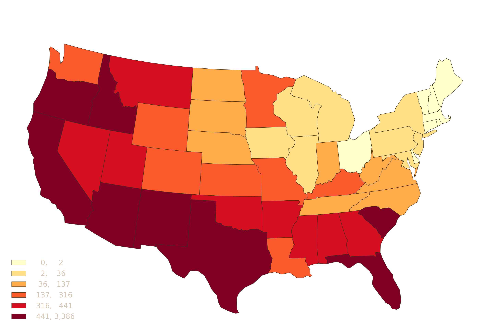
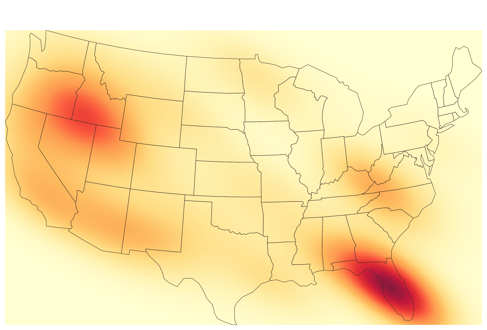
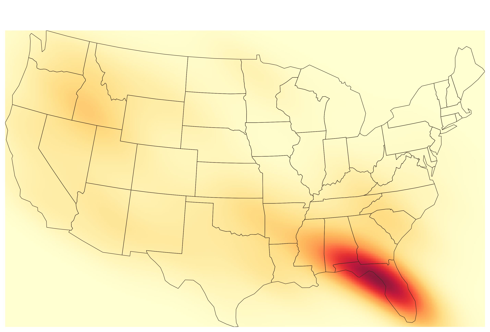

Where US wildfires went, 1985–2014
Two 15-year windows on the same map — aggregated by state, reprojected to Albers Equal Area, colored by fire count. A two-notebook pipeline from raw shapefile to published figure.


Kernel density surfaces
The choropleths above count fires by state. These density surfaces smooth the point data continuously — the hot spots shift across the two periods, and the comparison is easier to feel than count.


How the pipeline works
Why Albers Equal Area
The raw fire data ships in EPSG:4326 (lat/lon degrees). Counting points in degrees distorts area — a one-degree box in Montana covers far more ground than one in Florida. The pipeline reprojects everything to EPSG:5070 (NAD83 / Conus Albers Equal Area) so states are compared at their true geographic weight.
Why a spatial join
Fires arrive as point coordinates. States arrive as polygons. To count fires per state the pipeline uses a within-predicate spatial join (geopandas.sjoin), then groups by period and state.
Both snippets are from the analysis notebook, lightly trimmed. Open the live notebook for the full cell.
Data sources
Two public datasets drive the analysis — US wildfire occurrence records split into two 15-year windows, plus a state boundary file for the spatial join.
| Layer | Source | Format | Role |
|---|---|---|---|
| Wildfire occurrences 1985–1999 | MTBS Fire Occurrence Database (mtbs_FODpoints_DD) | Shapefile (point) | Fire counts, period 1 |
| Wildfire occurrences 2000–2014 | MTBS Fire Occurrence Database (mtbs_FODpoints_DD), second window | Shapefile (point) | Fire counts, period 2 |
| State boundaries | Natural Earth 1:110m admin_1 states/provinces | Shapefile (polygon) | Spatial join unit |
Sources match the actual read_file paths in the analysis notebook — fires from Data/mtbs_FODpoints_DD/ (MTBS Monitoring Trends in Burn Severity), states from Data/110m_cultural/ne_110m_admin_1_states_provinces.shp.
The two notebooks
This project is pure Jupyter — no web app. These are the two files; everything else is scaffolding.
Prefer a rendered view? Open either file through nbviewer.
Honest limits
- Occurrence count, not severity. A 100-acre fire and a one-acre fire count the same. The analysis measures how many fires started, not how much burned.
- The dataset ends at 2014. The 2017–present megafire era (Camp Fire, Paradise; 2020 West Coast; 2023 Maui; recurring Dixie / Caldor) is not represented. A refresh on the next FPA-FOD release would reset the headline.
- Descriptive, not causal. The maps show where and when fires happened; they do not attribute cause to climate, fuel loading, ignition source, or policy.
- State is a coarse unit. California is a single polygon — a tract-level or ecoregion-level analysis would reveal patterns this view hides.
- CRS caveat. EPSG:5070 is correct for the continental US; Alaska and Hawaii, if present in the source, need a different projection and were excluded from the analysis.